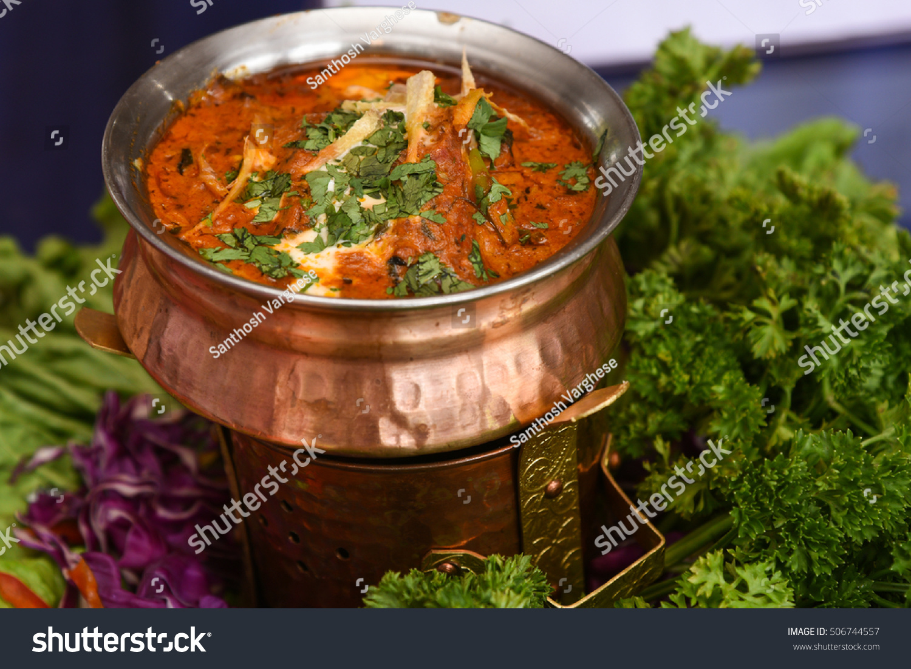

Kadahi Panner

Kadahi Paneer is a popular Indian dish made with paneer (Indian cottage cheese), bell peppers, tomatoes, and a blend of spices. It gets its name from the Kadahi (wok) in which it is traditionally cooked. Here’s a simple and flavorful recipe for Kadahi Paneer:
Ingredients
For the Paneer:
- 1 tbsp oil
- 1 teaspoon turmeric powder
- Salt to taste
For the Kadahi Masala:
- 1 teaspoon coriander seeds
- 1 tbsp cumin seeds
- 1 teaspoon fennel seeds
- 2 dried red chillies
For the Gravy:
- 2 tablespoons oil
- 1 large onion(finely choped)
- 2 large tomatoes(pureed)
- 1 green bell pepper (capsicum,cut into cubes)
- 1 red bell pepper (capsicum,cut into cubes)
- 1 teaspoon garam masala
- Salt to taste
- 1/4 cup fresh cream (optional)
- Fresh cilantro (for garnish)
Preparation
Prepare the Paneer:
- Heat 1 tablespoon of oil in a pan over medium heat.
- Add the turmeric powder and a pinch of salt.
- Add the paneer cubes and sauté until they are lightly golden. Remove and set aside.
Make the Kadai Masala:
- Dry roast the coriander seeds, cumin seeds, fennel seeds, dried red chilies, and black peppercorns in a pan over medium heat until fragrant.
- Allow them to cool, then grind them into a coarse powder using a spice grinder or mortar and pestle. Set aside.
Prepare the Gravy:
- Heat 2 tablespoons of oil in a Kadai or a large pan over medium heat.
- Add the finely chopped onions and sauté until they turn golden brown.
- Add the ginger-garlic paste and sauté for another minute.
- Add the pureed tomatoes and cook until the oil starts to separate from the mixture.
- Add the turmeric powder, red chili powder, garam masala, and salt. Mix well.
- Add the cubed green and red bell peppers and sauté for a few minutes until they are slightly tender but still crisp.
- Add the prepared Kadai masala and mix well.
Combine and Cook
- Add the sautéed paneer cubes to the gravy and mix gently.
- If using, add fresh cream to the mixture and stir well.
- Cook for another 5 minutes, allowing the flavors to meld together.
Serve
- Garnish with fresh cilantro
- Serve hot with naan, roti, or rice
Back To Top
Back To Homepage